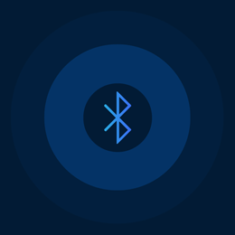

<ion-content>  
  <br/>
  

   <ion-list> 
    <ion-button class="gumbVelikost" color="light"
    ion-item *ngFor="let device of heartRate.devices" [routerLink] = "['/prikaziUtrip/', device.id]" routerDirection="forward">
      <p>{{ device.name }}</p>
    </ion-button>  
   </ion-list> 

</ion-content>
